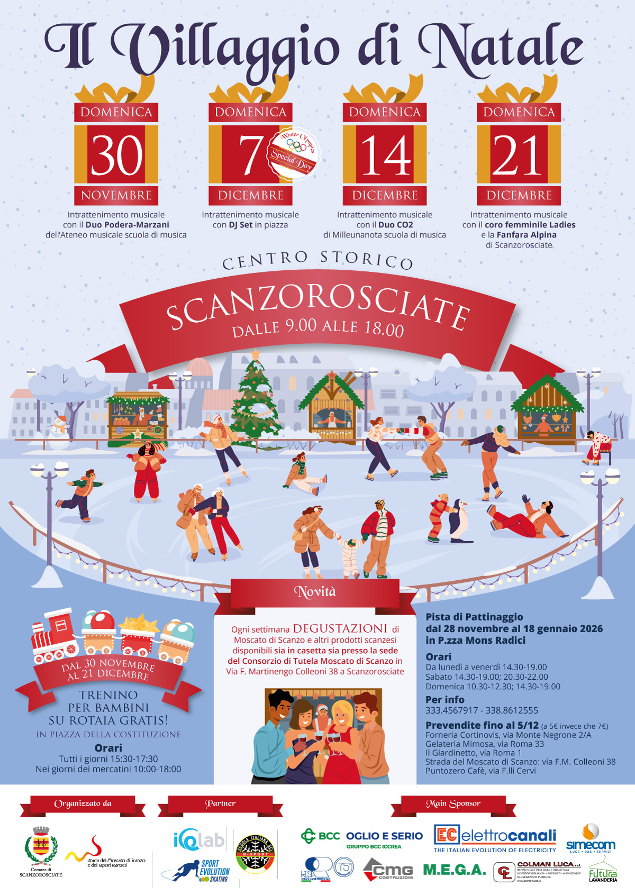
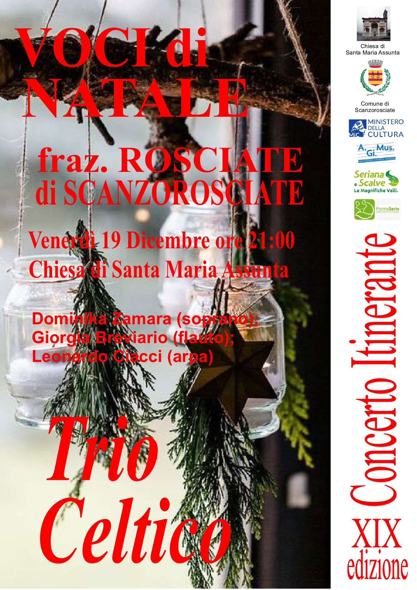

Natale a Scanzorosciate
“Un Natale da vivere Insieme"
Durante il periodo natalizio, la città si veste di luci e atmosfere suggestive, trasformando strade e piazze in luoghi di incontro e condivisione. Decorazioni, iniziative ed eventi accompagnano cittadini e visitatori in un percorso fatto di tradizione, musica e momenti da vivere insieme. Il Natale diventa così un tempo speciale per riscoprire il valore della comunità, passeggiare tra le vie illuminate, partecipare alle iniziative locali e lasciarsi avvolgere da un clima di festa e accoglienza che rende la città ancora più viva e vicina alle persone.
Festa del Moscato di Scanzo

I mercatini di Natale sono molto più di semplici bancarelle: sono luoghi dove si respira la magia delle feste, tra luci scintillanti, profumi di dolci e artigianato locale. Passeggiando tra le vie addobbate, è possibile scoprire prodotti tipici, idee regalo uniche e vivere momenti di gioia da condividere con familiari e amici.
Ogni mercatino racconta una storia, intrecciando tradizione, cultura e spirito natalizio, trasformando la città in uno spazio incantato da esplorare e gustare in ogni dettaglio.
Scopri di più sul nostro volantino!
Cori di Natale

I cori di Natale sono un'importante tradizione durante le festività, portando musica e gioia nelle piazze e nelle case. Gruppi di cantanti si esibiscono con canti natalizi, creando un'atmosfera festosa e coinvolgente. La partecipazione è aperta a tutti, grandi e piccini, che vogliono condividere il calore del Natale attraverso la musica.
Scopri di più sui cori di Natale!